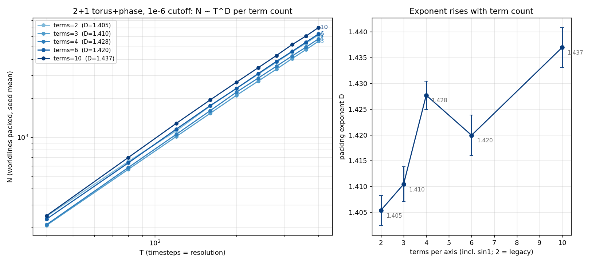
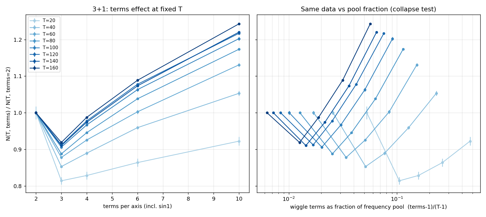
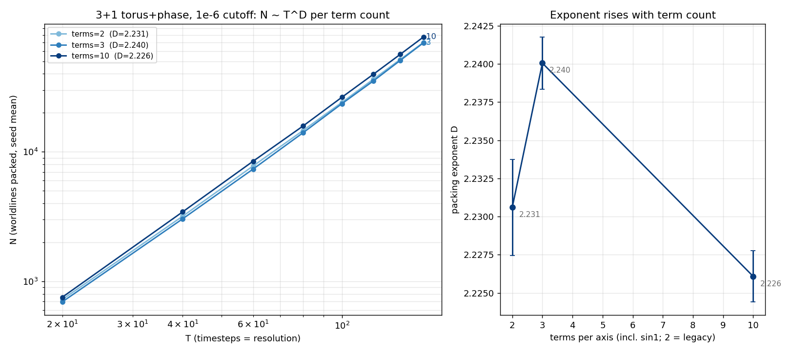

First campaign of the term-count generalization: the 3+1 engine
learned --terms K (K−1 unique integer wiggle
frequencies per axis, unit slope budget split uniformly on the
simplex so Σ|a·b| = 1 exactly, per-term even-frequency
phases — the viewer's model, ported verbatim; K = 2 is the
legacy single-wiggle model, bit-identical RNG stream). Same T grid,
seeds, and cutoff for every arm, so the term count is the only knob.
Left: seed-averaged N(T) per term count — five clean power
laws, fanning apart as T grows. Right: the fitted exponent climbs
monotonically with term count, 2.294 → 2.394.
D = 2.294(4), 2.319(1), 2.351(2), 2.368(1), 2.394(2) for
terms = 2, 3, 4, 6, 10 — a monotone rise, and the
power-law fits get cleaner with more terms
(slope-spread 0.052 → 0.017). At terms = 10,
D/d = 0.798 ≈ 4/5.
The headline N ~ T2.33 is therefore not a constant of
the model but a property of the two-term worldline space: richer
per-axis function spaces pack with a systematically higher
exponent.
The raw jam count is non-monotonic at fixed T (dip at terms = 3:
98k → 90k → 97k → 107k → 122k at T = 160)
while D rises monotonically — the dip is a prefactor
effect, visible in the left panel as the fan inverting at low T
(the legacy model packs more at T = 20).
Verification: every job ran 3–200× past the 3e7
acceptance window (attempts 1.0e8–7.1e9), 200/200 curves
and dumps collected, no failures.
The verification also caught a cross-era artifact worth recording:
the terms = 2 arm reproduces the archived
torus3d_phase_e6 cells with N uniformly +4.4–5.6%
and ~2× the attempts. Cause: engines before the 07-06
pipelining rework pushed the post-adaptation batch into the
acceptance-stop window, overstating window attempts ~2×, so
pre-07-06 campaigns effectively stopped at ~2e-6 rather than the
requested 1e-6. The offset is T-independent — old exponents
stand, old N prefactors sit ~5% low. Today's data is the first to
honor the cutoff exactly.
Takeaway: the packing-number exponent has a function-space knob. The
2+1 sweep (freq2d_e6, running) tests whether the trend
is dictionary-robust; the corrdim pass over these dumps will test
whether the spatial dimension of the matter slices moves
with terms or stays pinned at 3.
Update (same evening): the rise does not survive
uniform proposals — see the
uniform-sampler verdict below.
It is a property of the smart-sampled ensemble, not of the packing.
FREQ campaign, 2+1: same trend, smaller amplitude — the exponent knob is dictionary-robust
The 2+1 companion to the morning's 3+1 sweep, same one-knob design
(term count only; the 2+1 engine has had --terms since
the subpath work). Question: is the exponent-vs-terms trend a 3+1
artifact or a property of the packing problem?

2+1: the exponent rises 1.405 → 1.437 across the terms sweep
— same direction as 3+1, a third of the amplitude, with a
∼1.5σ wobble at terms = 6.
D = 1.405(3), 1.410(3), 1.428(3), 1.420(4), 1.437(4) for
terms = 2, 3, 4, 6, 10. The end-to-end rise is ~8σ; the
terms = 6 dip is within ~1.5σ of flat, so 2+1 reads as
“rising, roughly monotone” rather than the 3+1
staircase.
Amplitude is dimension-dependent: ΔD = 0.032 in 2+1 vs
0.100 in 3+1 across the same terms range. In D/d units:
0.703 → 0.718 (2+1) vs 0.765 → 0.798 (3+1) —
richer function spaces buy relatively more packing headroom in
higher dimension.
The terms = 2 exponent 1.405 sits close to the historical 1.38
(different cutoff depth and T window; the pre-07-06 stop bias
does not move exponents).
Takeaway: the function-space knob on the packing exponent is
dictionary-robust — both dimensions respond in the same
direction, scaled by dimension. Decay-rate companions
(cutoffs 1e-6/1e-7/1e-8 at two T values, terms ∈ {2,10}) are
running now for the approach power law.
Update (same evening): in 3+1 the trend is a
smart-sampler artifact (below);
the 2+1 uniform companion has not yet run, but the same correction is
expected to apply.
Terms effect separated by T: no pool-fraction collapse, but constant-fraction diagonals restore the legacy exponent
Same freq3d_e6 data, resliced per T · chart
358420b
Follow-up question (Kevin): the term count is bounded by the
frequency pool at each resolution (nyq: T−1 unique wiggle
frequencies), so is the controlling variable the raw term count or
the term count as a fraction of the pool? Reslicing the jam
counts per T as N(T, terms)/N(T, 2):

Left: the terms effect at fixed T. Right: the same data vs pool
fraction (terms−1)/(T−1) — no collapse.
The enhancement is resolution-dependent: at T = 20, ten terms
packs 8% less than legacy; the crossover sits near
T ≈ 60, growing to +24% at T = 160.
The terms = 3 dip sits at raw terms = 3 for every T (not at a
fixed pool fraction) — a parity-like feature of the term
count itself.
Rescaling by pool fraction does not collapse the curves, so the
fraction is not the single controlling variable…
…but the exponent along constant-fraction
diagonals of the (T, terms) grid comes out
D ≈ 2.25 (frac ≈ 0.051: cells (20,2)/(60,4)/(100,6))
and D ≈ 2.24 (frac ≈ 0.025:
(40,2)/(80,3)/(120,4)) — close to the legacy terms = 2
local slope over the same windows (≈2.23), and well below
the fixed-terms=10 fit (2.394). Much of the fixed-terms D rise
may be the pool fraction shrinking with T.
Takeaway: suggestive but not conclusive — the diagonals are
three points each. The clean experiment is a constant-fraction
ladder (terms tied to T, several fractions), which needs a
kMaxWiggle bump and a terms-per-T campaign knob; queued as the next
engine task.
Uniform-sampler verdict: the D-vs-terms rise was a smart-sampler artifact — and the kinematics chapter moves
frequni3d_e6 campaign (uniform frequency proposals,
--uniform: no high-frequency bias, no coprime rule at any
term count; terms ∈ {2,3,10} × T = 20–160 × 3
seeds) · sampler knob
cac46de
· chart
4a6c3ef
Chris's challenge: the smart bias “packs more matter by getting
rid of the light,” and the coprime rule is a knot-era constraint
that has no business in the proposal measure. The one-knob test: rerun
the terms sweep with uniform proposals. Verdict — he was right,
twice:

Uniform proposals: D = 2.231(3), 2.240(2), 2.226(2) for
terms = 2, 3, 10 — flat. The morning's
2.294 → 2.394 staircase does not survive the sampler change.
The exponent is sampler-dependent and, under uniform
proposals, terms-invariant at D ≈ 2.23 (D/d
≈ 3/4) — matching the constant-fraction diagonals and
the same-window legacy slope. The corrected headline: function-space
enrichment does not move the uniform packing exponent;
the smart bias inflates it in a terms-dependent way.
The terms = 3 dip was the coprime rule: −8%
(smart, T=160) collapses to −0.7% (uniform). The rule is
enforced only in the smart terms = 2 branch, so the smart sweep's
2→3 step changed two things at once.
The coprime rule silently shaped the kinematics era:
pairwise-coprime tuples allow at most one even axis, and the
uniform jam keeps a 39% population of ≥2-even worldlines
(selected against — 0.8×/0.7× proposals —
but not evicted). Re-measured on the uniform dumps: mover fraction
0.52 → 0.766; per-axis phase tilt shrinks 3×
(⟨v⟩ 0.539 → 0.603); w = 0.070 →
0.145 (Chebyshev) / 0.193 (Euclidean).
What survives, and it is the better result:
jamming's phase/parity selection cools w by 20–24% below the
proposal value in both ensembles and both metrics (old:
0.087→0.070; uniform: 0.185→0.145, 0.252→0.193) --
the suppression factor, not the absolute w, is the law-like
quantity. Also surfaced: with multi-axis movers the model's causal
structure is explicitly a per-axis (Chebyshev) light cone; 27% of
movers exceed Euclidean speed 1 while respecting it.
Takeaway: exponent story re-anchors to D ≈ 2.23 with a stronger
invariance claim; spatial uniformity untouched; the kinematics section
(I.4–I.6) needs a rebuild on the uniform ensemble. Both earlier
entries today should be read with this correction. Next: the 2+1
uniform companion, kinematics re-derivation for multi-axis movers, and
the fixed-point question (does iterating the jam's measure back as
proposals converge to a self-consistent ensemble?).